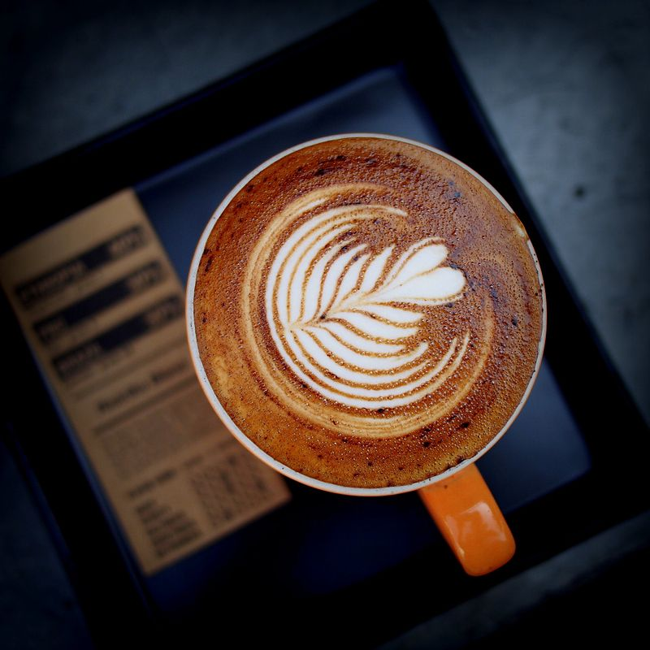
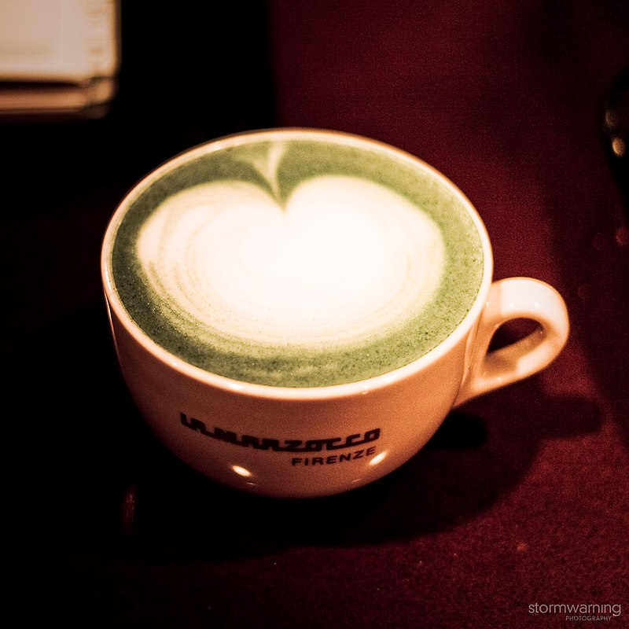
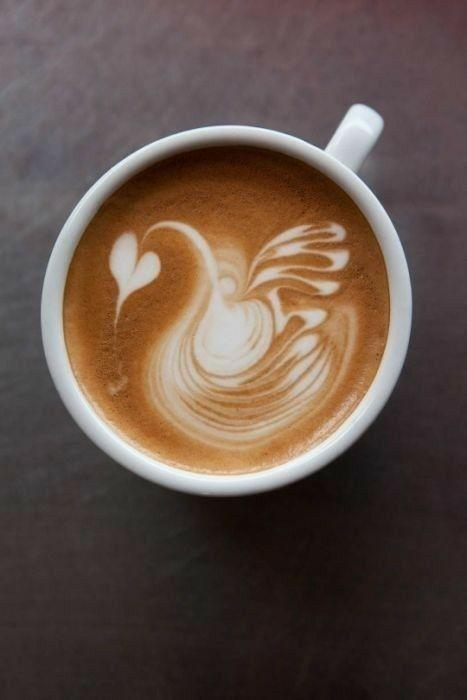
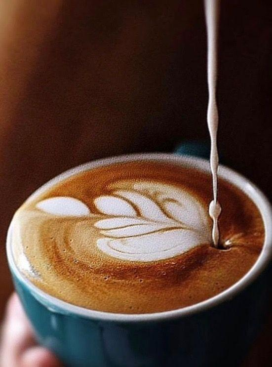

Welcome to | |||||
|---|---|---|---|---|---|
|
HOME |
CAFÉ |
MENU |
BLOG |
ABOUT US |
CONTACT US |
| LATTE ART | |||||
Latte art is a method of preparing coffee created by pouring microfoam into a shot of espresso and resulting in a pattern or design on the surface of the latte. It can also be created or embellished by simply "drawing" in the top layer of foam. Latte art is particularly difficult to create consistently, due to the demanding conditions required of both the espresso shot and milk. This, in turn, is limited by the experience of the barista and quality of the espresso machine. The term also applies to other beverages containing milk foam, such as cappuccino and hot chocolate. |
|||||
Latte art was developed independently in many different countries, following the introduction of espresso and the development of microfoam, the combination of crema 'the emulsion of coffee oil and brewed coffee' and microfoam allowing the pattern; it presumably was initially developed in Italy. In the 1980s and 1990s, latte art was developed in Seattle, in the United States, and particularly popularized by David Schomer. |
 | ||||
|  | Schomer credits the development of microfoam ("velvet foam" or "milk texturing") to Jack Kelly of Uptown espresso in 1986, and by 1989 the heart pattern was established and a signature at Schomer's Espresso Vivace. The rosette pattern was then developed by Schomer in 1992, recreating the technique based on a photograph he saw from Cafe Mateki in Italy. Schomer subsequently popularized latte art in his course "Caffe Latte Art". |
At the same time Luigi Lupi from Italy met Schomer on the internet and they exchanged videos they made on Latteart and Cappuccini Decorati. Luigi Lupi involved and growth up this art and invented the Tulip in Salonnico during an Exhibition in the MUSETTI booth in 2004. | |
|  |  |
Latte art requires first producing espresso with crema and microfoam, and then combining these to make latte art. Before the milk is added, the espresso shot must have a creamy brown surface, an emulsion known as crema. As the white foam from the milk rises to meet the red/brown surface of the shot, a contrast is created and the design emerges. As the milk is poured, the foam separates from the liquid and rises to the top. If the milk and espresso shot are "just right", and the pitcher is moved during the pour, the foam will rise to create a pattern on the surface. Alternatively, a pattern may be etched with a stick after the milk has been poured, rather than during the pour. |